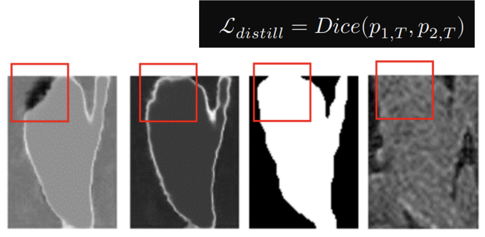
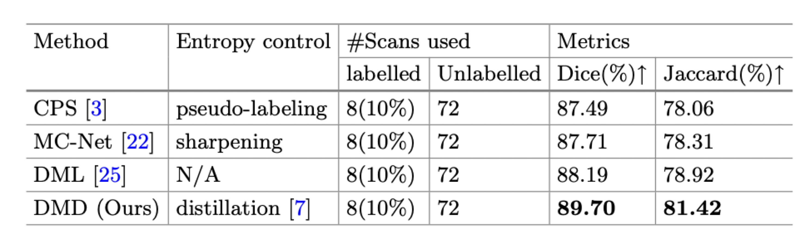
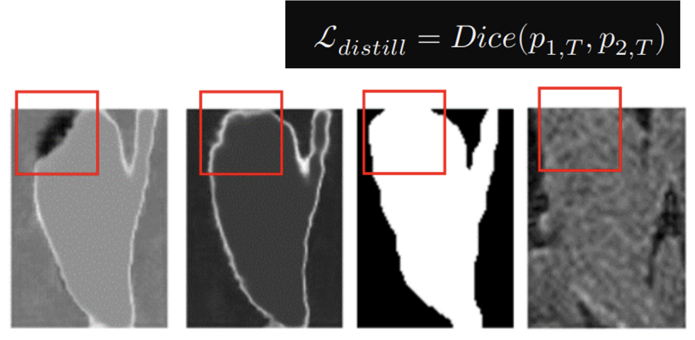
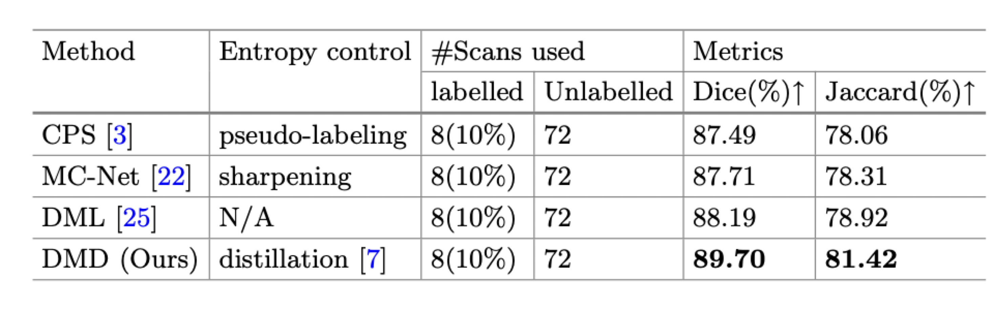
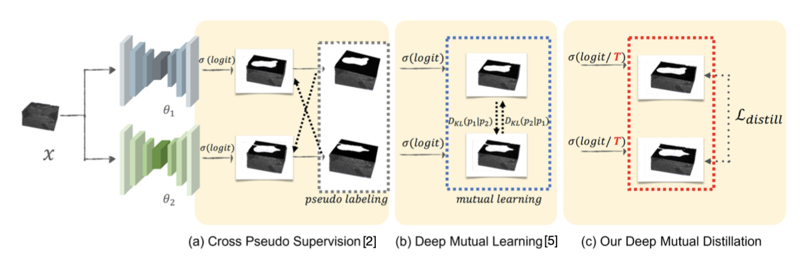
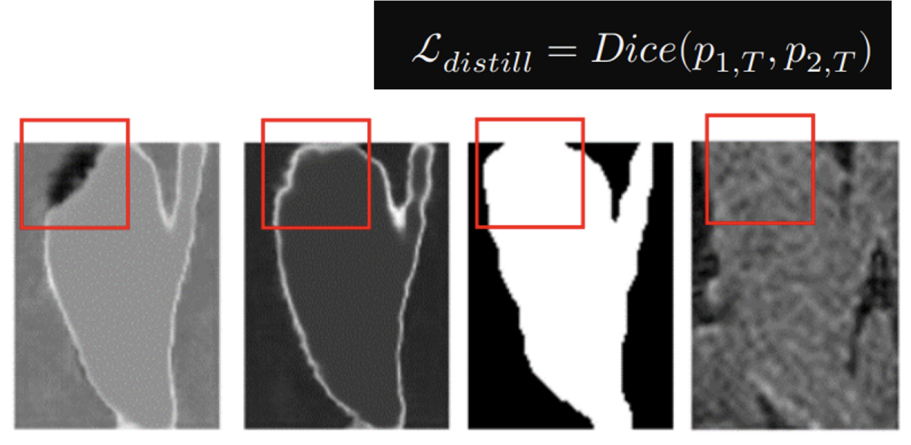
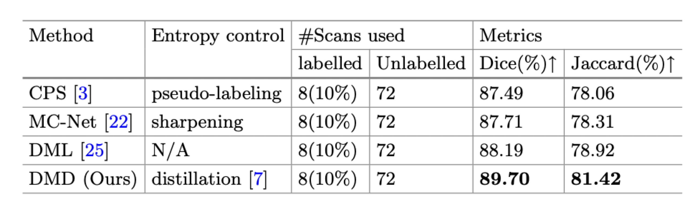

..
 



Deep Mutual Distillation for Semi-Supervised Medical Image Segmentation
Intro
Proposed a novel semi-supervised method called Deep Mutual Distillation for accurately segmenting the atria in cardiac MRI images, achieving state-of-the-art performance on benchmark datasets.
Methods

Mutual Knowledge Distillation
- Distill knowledge from each other
- Increase temperature above 1.0 to enhance entropy and exploration
- Utilize Dice loss to address class imbalance issues
Results

